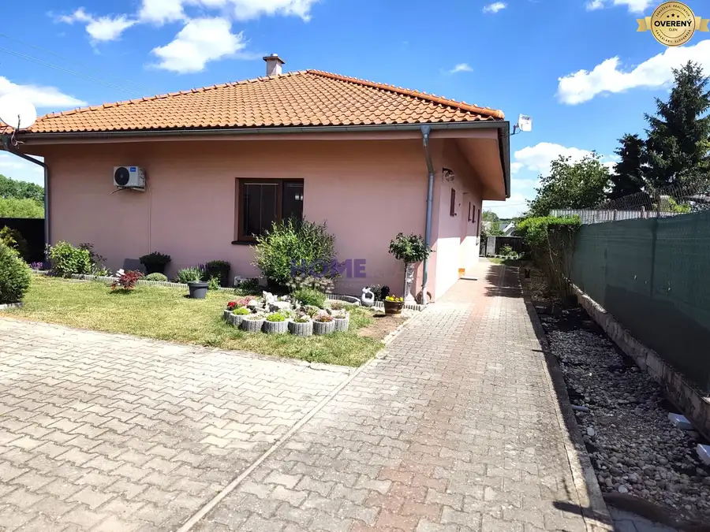
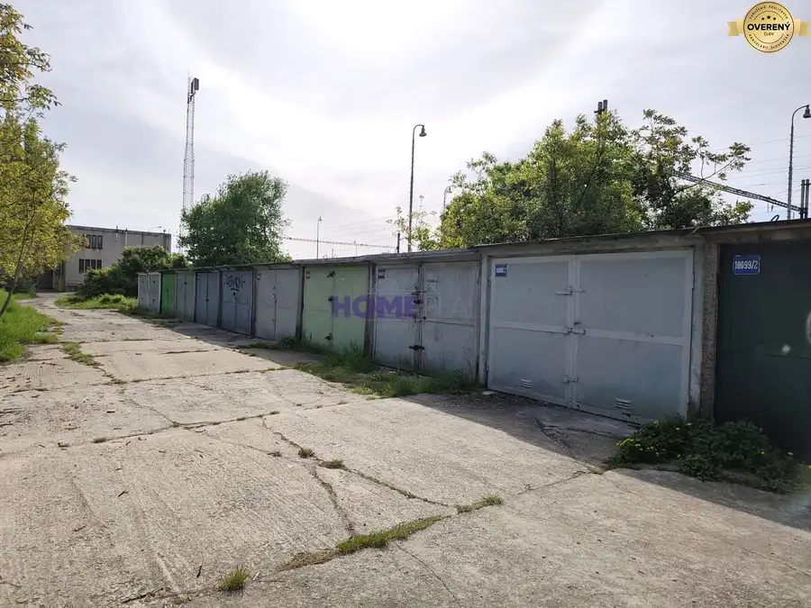
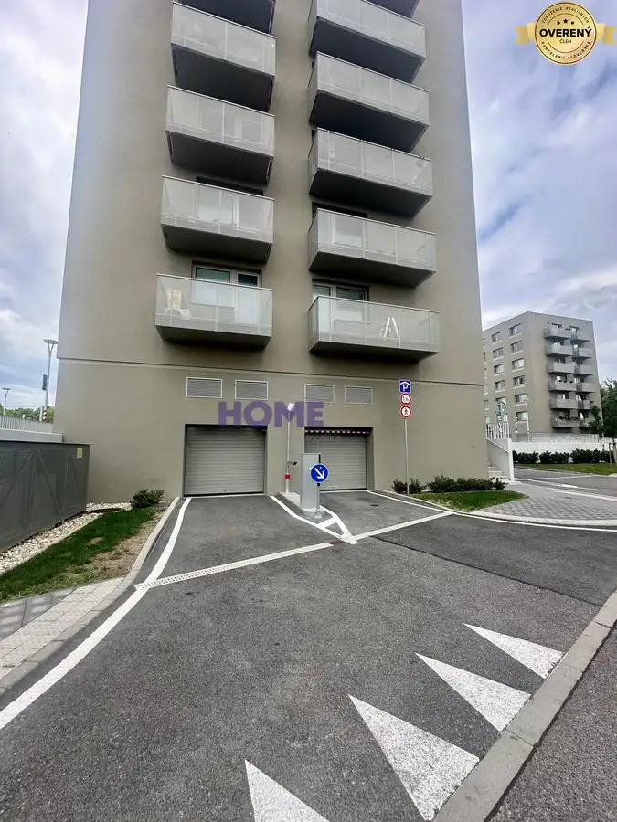

Priestranný 1,5 izb. byt s pekným výhľadom na zeleň
Ružinov, Bratislava
- Dispozícia1,5
- Plocha42.43 m²
- Poschodie4. z 6
- Vlastníctvoosobné
O nehnuteľnosti
Realitná kancelária HOME Real v exkluzívnom zastúpení majiteľa ponúka na predaj priestranný 1,5 izb.byt v bytovom komplexe Avidol v staršej novostavbe z r. 2008, nachádzajúci sa na Galvaniho ulici.
Byt o celkovej rozlohe 46,87 m2, z toho balkón má 4,44 m2, nachádza sa na 4p./ 6.p. s výťahom.
Je teplý svetlý s pekným výhľadom na upravenú zeleň a detské ihrisko.
DISPOZÍCIA :
Vstupná chodba, obývacia izba s kuchyňou, priečkou oddelený spací kút, kúpeľňa s vaňou a toaletou. Vstup na balkón je z obývačky.
Veľkou výhodou je murovaná pivničné kobka na poschodí hneď vedľa bytu.
VYBAVENIE :
Vstupná chodba so vstavanou šatníkovou skriňou, rohová kuchynská linka s elektrickou varnou doskou a rúrou, jedálenský stôl so stoličkami, rohová kožená sedacia súprava, skrinková zostava s televízorom, manželská posteľ a komoda.
OKOLIE :
Pekne upravené okolie poskytuje komfortné bývanie s kompletnou občianskou vybavenosťou. V dostupnej vzdialenosti sú obchody, nákupné centrum Avion, Ikea, zastávka MHD, výborný prístup na diaľničný obchvat.
Byt je vhodný aj na investíciu. Momentálne je dlhodobo prenajatý.
Výhodou sú nízke mesačné náklady na 1 os., správcovské 95,-eur + 15,-eur garáž + 21,-eur elektrika.
Internet - optika a TV sú od spoločnosti V-NET.
Cena bytu: 150 000,-Eur vrátane kompletného právneho servisu a poplatkov pre RK.
Parkovacie miesto v garáži o výmere 14,54 m2 za 20 000,-Eur
V prípade záujmu nás neváhajte kontaktovať na tel. č.
Parametre
| Celková rozloha | 46.87 m² |
|---|---|
| Úžitková plocha | 42.43 m² |
| Poschodie | 4 |
| Počet poschodí | 6 |
| Počet izieb | 1,5 |
| Vlastníctvo | osobné |
| Odvoz odpadu | áno - separovaný |
| Plyn | nie |
| Internet | optika |
| Kúpeľňa | vaňa |
| Vykurovanie | spoločné |
| Balkón | áno - 1 |
| Pivnica | nie |
| Výťah | áno |
| Parkovanie | vlastné vyhradené |
| Postavené z | tehla |
| Zariadenie | zariadený |
| Zateplený objekt | áno |
| Okná | plastové |
| Orientácia | severovýchodná |
| Dátum zverejnenia | 2. 11. 2023 |
Kde to je
Mohlo by Vás zaujímať

Rodinné domy10 242 000 €Novostavba 4 izb. rodinného domu s veľkým pozemkom a garážou. Lakšárska Nová Ves 4-izbový107 m² Realitná kancelária HOME Real EXKLUZÍVNE ponúka na predaj novostavbu 4-izbového rodinného domu so zastrešenou a zasklenou terasou 30 m2. Dom s…
Ostatné3 15 000 €Výborná cena *** murovaná garáž v Ružinove na domkárskej ulici. Ružinov, Bratislava 18 m² Garáž o rozlohe 18 m2 je po čiastočnej rekonštrukcii, čistá, vymaľovaná s vynovenou bránou, bez elektriky a vody. Pozemok pod garážou nie je v…
Ostatné Cena dohodouOvocné sady - prenájom parkovacieho miesta v podzemnej garáži. Ružinov, Bratislava 12.5 m² Realitná kancelária HOME Real ponúka na prenájom parkovacie miesto v podzemnej garáži v novostavbe bytového komplexu Ovocné sady. Nachádza sa pod…